I initially got this idea after realising that I have my "bookmarked" designs scattered across different places. Many were bookmarked in X, some were in Notion with a short caption (as I obviously can't add captions in X when bookmarking a post), and some that I took a picture of on my phone just stayed in my phone's gallery as I didn't always have the time to add them into Notion on my phone, because then I would have to wait for the app to load, and then I would have to scroll all the way down my Notion page to add it.
Of course, there are workarounds I could have done: make Notion the central place for everything and not rely on X bookmarks, and in Notion itself, make the convention for adding designs to add it to the top of the page, and not at the bottom. But this didn't solve the problem of having to wait for the Notion app to load.
On top of this, making my own app has other benefits. I can make adding designs even more convenient than the centralised Notion page through features like adding a design via the device's camera directly in my app, as well as adding a feature where I can easily add text or hand-drawn annotations on the design itself, to further note-down what I like about the design.
Other benefits include simply having a simpler app. Notion is an app with a lot of functionality and large feature set, but this also makes it sometimes cumbersome to use for simple use cases. And since I use Notion for a lot of other things, there is a lot of visual noise when simply using the app for my use-case, which is simply adding designs to store them and then reference or search for them later. Compare the left image of Notion to the right image of my current prototype for Design Repository below. The left side bar is the main problem here: it has a lot of information in it, which is great for what Notion is built for, but creates a lot of visual noise, at least for me.
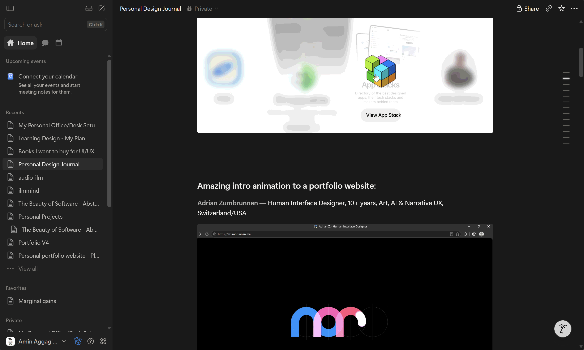
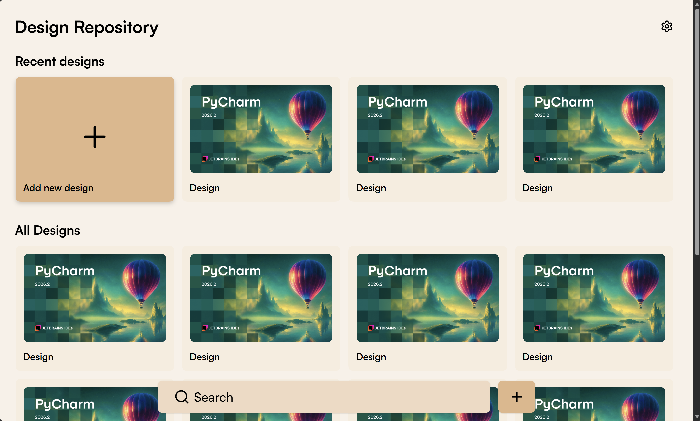
I would, hands down, use Design Repository any day of the week for my use case. It is simply better to use because of its lack of visual noise and the focus of its feature set: adding designs and searching for them. Nothing more, nothing less.
I didn't really have a solid phase-by-phase process for this project, because the app is so simple and made for such an uncomplex use-case. And so, I just started coding in Cursor (by hand, not vibe-coding) and prototyped the design on the fly using HTML, CSS, and JavaScript (specifically React). I didn't make any UX wireframes or played around with colour palettes because I already knew what I wanted. I did have several things in my mind when initially making this project. The following things were what I considered when initially making the prototype you see in the above image.
I really cared about colour in the onset of making this project. I knew I wanted a colour scheme that simultaneously felt calm, welcoming, friendly, but still modern (and professional, to a degree). I decided to use a sandstone colour scheme, which came about after taking inspiration from a mosque I prayed at in Sydney recently at and the new Western Sydney International Airport colour scheme. I love the calming nature of this colour scheme, and there is something so nature-y about it. I felt in a way that by using the sandstone colour scheme in my app, it reminds me of the natural beauty of desert sand dunes, like those that were in the default background for MacOS Mojave. I really love nature, as you could probably tell, and the image of the sand dunes in my head looks so beautiful that I just had to use it for this app.
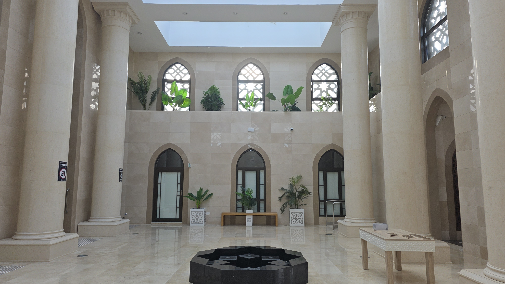
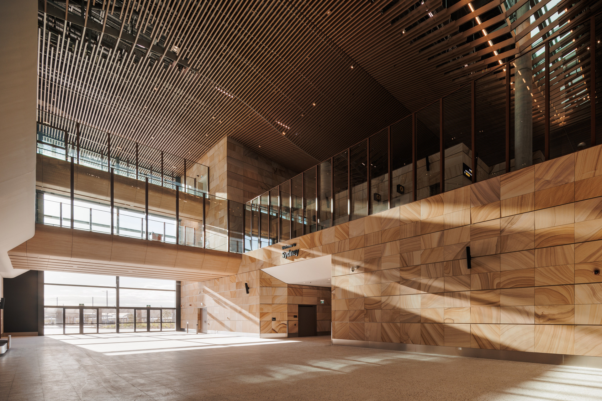
From the beginning of this project, I really wanted to a Sans Serif font that felt modern but was different to others I've used before, like Inter and Supreme. I came across Satoshi when casually scrolling through X, and felt that it was perfect for this app.
I also wanted to have a professional designer-level font size system for my app. I didn't want to make the sizes of my headings, subheadings and text in an adhoc manner, so I decided to use a font system calculator. I had seen a calculator like this made by Scott Tolinski in an episode of the Syntax podcast, but I couldn't find it, and so decided to use Fluid Type Calculator because it was one of the first few that came up. One comment I'll make about that calculator is that I really liked the simple design of its website, it wasn't very visually noisy, when considering all the buttons it needs to have for its calculator inputs. I'm super happy with the font system it calculated, which is shown below, and I'm also happy that all of the text becomes a little bit smaller on smaller screens.
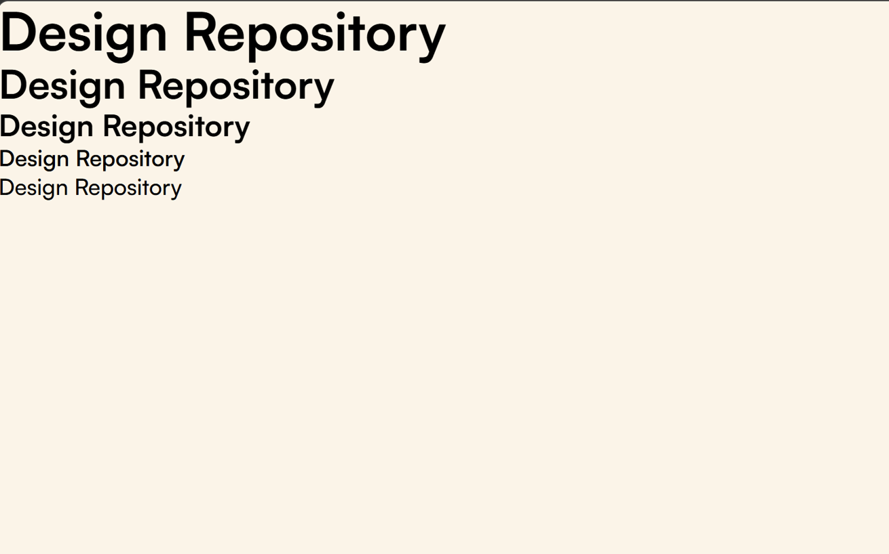
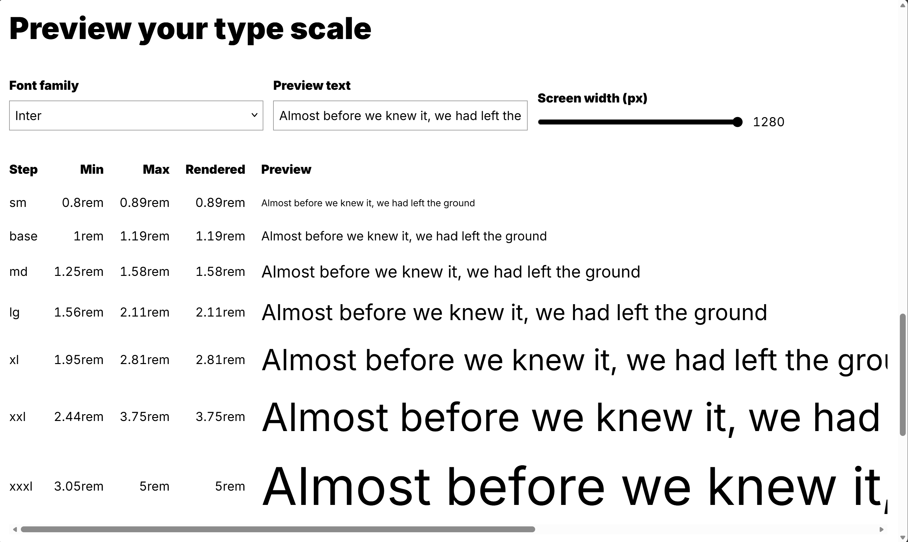
I really wanted the UX of this app to be good. More specifically, I wanted that, given the use case of this app which is to add designs and then search for them for viewing later (and editing, though that's not as primary of a concern), the app would be great at doing this. Three things I did were specifically meant for this:
For the first objective, I made two buttons. The first is a very large one which is in the "Recent designs" section which is at the top of the page, which is useful for desktop, as it super clear where it is on the page, given its size and its colour as shown below. The second button is located next to the search box. The reason for adding an "Add" button there is because if the user has scrolled through to see some previous designs, and then decides to add a new one immediately (which is something I might do), the user doesn't have to scroll all the way up just to add a new one, as this would waste time and feel very tedious. Another benefit of having a second button in that position on the page is that it is easy to tap when on mobile, as it is right at the bottom of the app, which is where one's hand would be when holding a phone, even with only one hand. This satisfies the third objective as well.
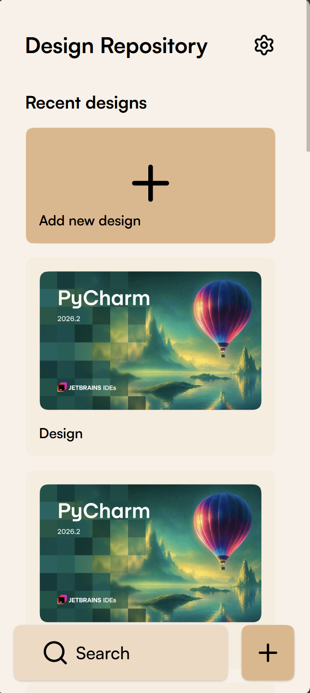
For the second objective, I made the search box hover over the app near the bottom of the screen. I made it hovering to give as much screen space as possible to the designs themselves, which makes the app feel more "open" in a way. Making it not hover and be at the same "3D height" (in more technical terms, z-index) as the designs will mean that the less of the designs themselves can be seen on the screen, which is not the feel I'm going for in this app. I want the app to feel like a simple, minimalist, calm and open space, almost like a large white/sandstone modern house.
I wanted my app to be responsive and to make the most of any given screen space. Currently, the only screen size I have not optimised for is one of an ultrawide monitor, but I have tried my best to optimise for other screen sizes. I'm really happy with how my app looks on screen sizes. Compare how certain elements in the Edit page are positioned differently in the three screen sizes below.
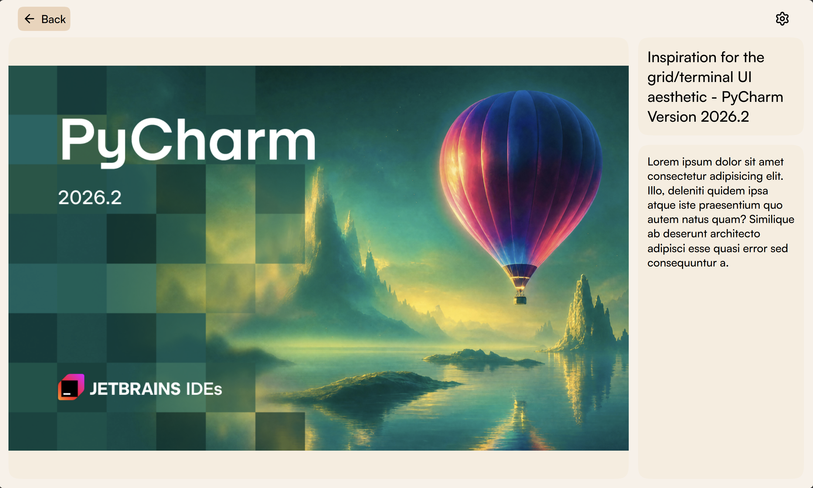
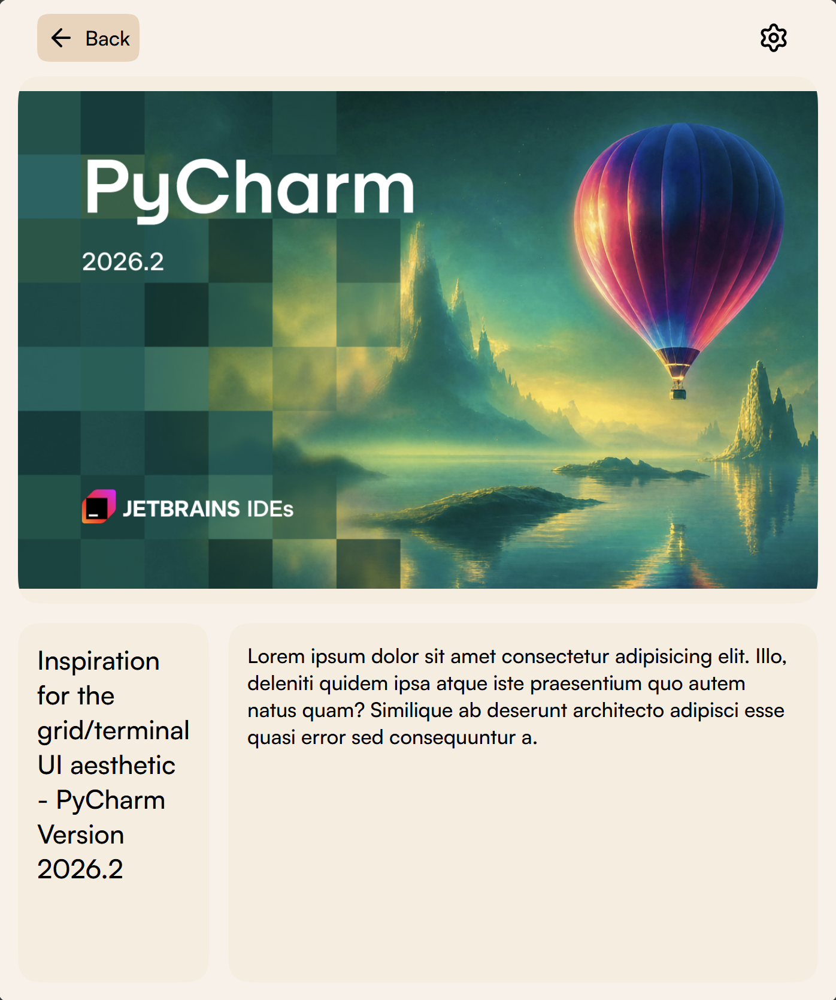
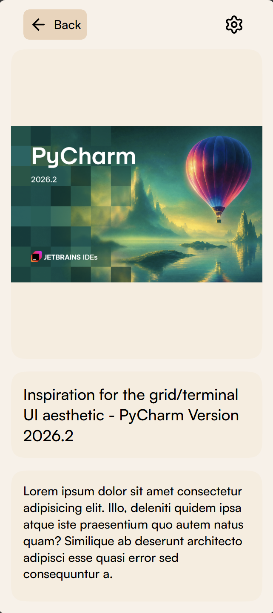
For the desktop size, I wanted the design's image to be as large as possible, as that is the entire point of the app: to focus solely on the designs themselves, and to make them as easy to view and draw inspiration from as possible. I think I achieved my goal, as the image is very large, but still doesn't impede the title and description on the right side.
For the tablet size, I'm very proud of the fact that I made a specific layout for the image title and description: title on the left and description on the right, with the description taking most of the space. This makes sense from a UX perspective, because the description is likely to be longer or much longer than the title, so less space is given to the title and more is given to the description.
It also feels much better to me than how it was originally, which felt like a blown up phone app. An image of this is below, and you can probably see what I mean. This UX reminds me of a common criticism of Android tablets when compared to iPads, which is that there are not as many mobile apps on Android optimised for a tablet screen size, and so they do not utilitise that extra space effectively. I did not want to fall into the same mistake when designing my app, and I think I have achieved my goal.
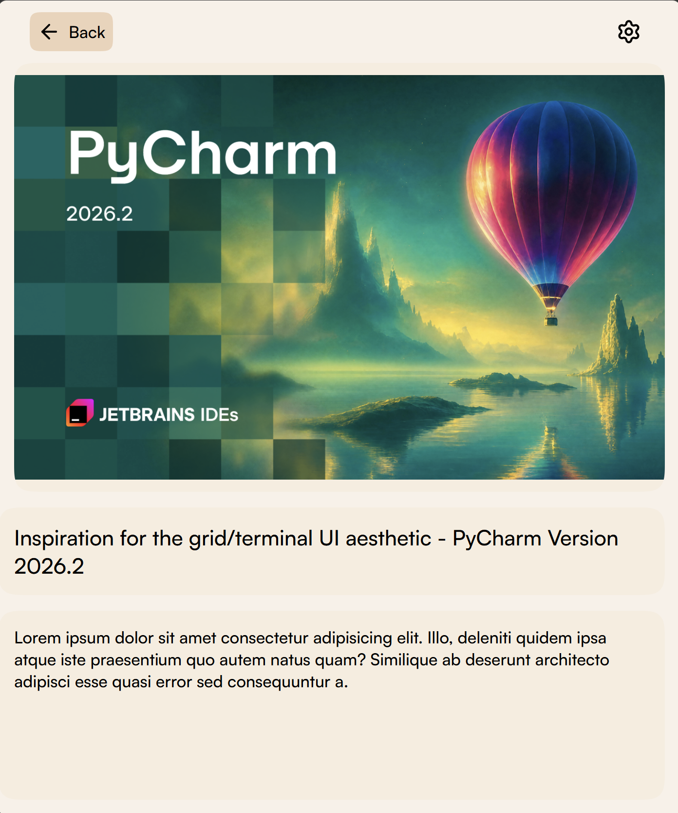
As you can probably tell so far, I want my app to make the user feel calm and easy-going through its colour scheme, typography, and UX layout. I think I've achieved that to a certain extent, although I'm a beginner designer, and so there may be many criticisms that can be made of my current design that I just can't see yet. I would love any criticisms so that I could improve, but for now, I'll have to settle for what I have now, and I do think it looks and feels great, it's just that I don't yet have the knowledge or experience to criticise my own work yet. That's a thing I'm trying to fix, which I've bought several books for.
From the very onset of me even thinking about this project, I didn't want my app to look like vibe-coded AI slop. I'm very against that type of design, and I want to try to design and craft something beautiful. I don't want my work to look like an AI coded it at all. I can have AI code the implementation for me, but not craft the design for me. I want to be in control of that. Though I'm naturally biased since I'm the one who made this design, I do think I have achieved my goal of not making an app that looks vibe-coded. I'm really happy with this.